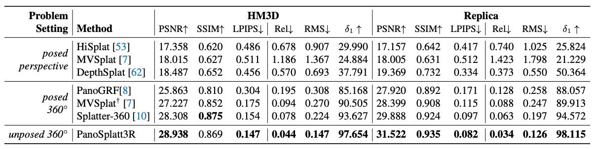

School of Electronics and Information, Northwestern Polytechnical University and
Shaanxi Key Laboratory of Information Acquisition and Processing, Xi'an, Shaanxi, China
⭐️ denotes equal contribution
✉️ Corresponding author daiyuchao[at]nwpu.edu.cn
Wide-baseline panorama reconstruction has emerged as a highly effective and pivotal approach for not only achieving geometric reconstruction of the surrounding 3D environment, but also generating highly realistic and immersive novel views. Although existing methods have shown remarkable performance across various benchmarks, they are predominantly reliant on accurate pose information. In real-world scenarios, the acquisition of precise pose often requires additional computational resources and is highly susceptible to noise. These limitations hinder the broad applicability and practicality of such methods. In this paper, we present PanoSplatt3R, an unposed wide-baseline panorama reconstruction method. We extend and adapt the foundational reconstruction pretrainings from the perspective domain to the panoramic domain, thus enabling powerful generalization capabilities. To ensure a seamless and efficient domain-transfer process, we introduce RoPE rolling that spans rolled coordinates in rotary positional embeddings across different attention heads, maintaining a minimal modification to RoPE's mechanism, while modeling the horizontal periodicity of panorama images. Comprehensive experiments demonstrate that PanoSplatt3R, even in the absence of pose information, significantly outperforms current state-of-the-art methods. This superiority is evident in both the generation of high-quality novel views and the accuracy of depth estimation, thereby showcasing its great potential for practical applications.
Overview of our proposed PanoSplatt3R. Given two panorama images as input and without knowing their relative pose, our model reconstructs the entire 3D scene using Gaussian Splats. The estimated geometry can provide photorealistic renderings at novel view points. We removed two walls from the final reconstruction to better display the room.
Quantitative comparisons on wide-baseline panorama reconstructions. We compare our model with methods that require accurate known pose, including those with cube map inputs and panorama inputs. Our model, even in the absence of camera pose, presents the best performance in both novel view synthesis quality and depth estimation accuracy.

@inproceedings{PanoSplatt3R,
title={PanoSplatt3R: Leveraging Perspective Pretraining for Generalized Unposed Wide-Baseline Panorama Reconstruction},
author={Ren, Jiahui and Xiang, Mochu and Zhu, Jiajun and Dai, Yuchao},
booktitle={ICCV},
year={2025}
}